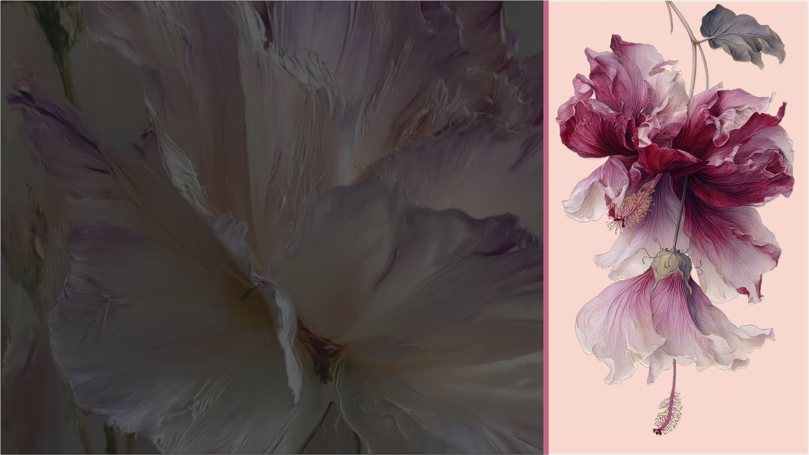
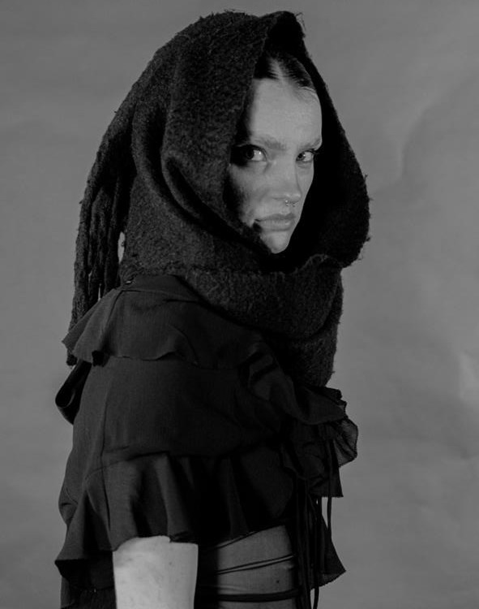
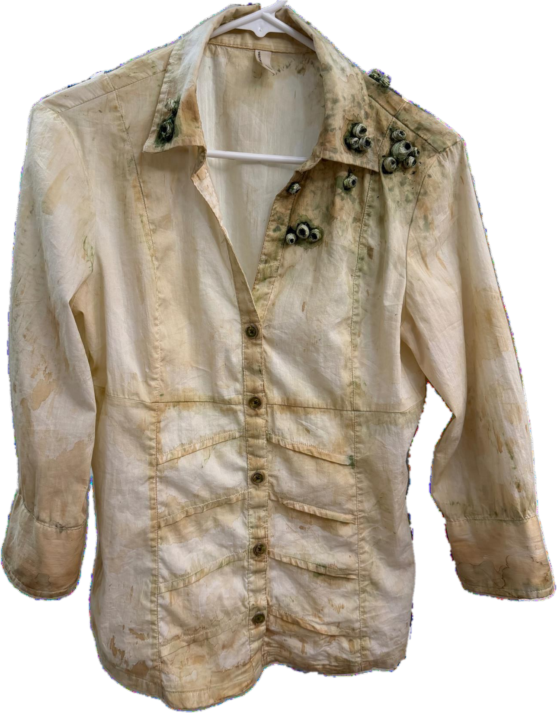

A Fashion Design Portfolio
Gabriela
Novoa.
Research-led ideas.
Emotionally driven design.
Stories made visible.
Fashion is a way
of seeing differently.
I'm a Fashion Design student at LaSalle College Vancouver, exploring the space between creative research, emotional storytelling, imagery and material experimentation.
More about me ↗Selected work.

Rooted Futures
Trend Forecasting & Colour Direction

I Am Two
Concept Development & Fashion Illustration

Noir Kei Ninomiya
Fashion Editorial & Creative Production

Black Signal
Digital Fashion & Collection Development

The Drowned Passenger
Costume Design & Textile Distressing
Curiosity becomes research. Research becomes a concept. A concept becomes something you can feel.